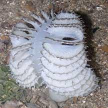
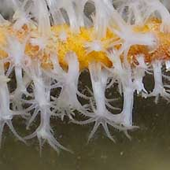
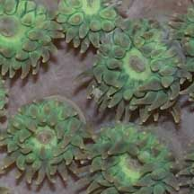
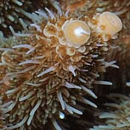
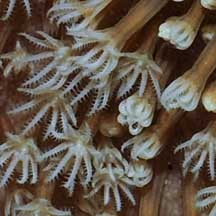
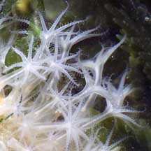

|
|
| cnidarians text index | photo index |
| Phylum Cnidaria > Class Anthozoa |
| Anthozoans Class Anthozoa updated Nov 2019
Where seen? Almost all cnidarians we commonly encounter on our shores are Anthozoans. They are among the most obvious creatures in coral reefs (hard corals being a member of this group), and come in a wide range of colours, textures and shapes. Some may be small and well camouflaged, or well hidden. What are Anthozoans? Anthozoans belong to Phylum Cnidaria. There are about 6,000 known species of anthozoans, making them the largest group of cnidarians. About two-thirds of all known cnidarian species belong to this class. What are NOT Anthozoans? Commonly encountered animals that do NOT belong to this group include jellyfishes and hydroids. Features: 'Anthozoa' means 'flower animals' in Greek. Some of the more familiar Anthozoans do indeed resemble flowers. In colonial Anthozoans, the tiny polyps are also flower-like. For example, polyps of hard corals, soft corals and gorgonians. Anthozoans that are are not quite flower-like include sea pens. |
 The cerianthid does resemble a flower. Changi, Jul 04 |
 The sea pen doesn't look like a flower, although its tiny polyps do. Chek Jawa, Aug 05 |
 Tiny polyps of a sea fan resembles a flower. Beting Bronok, Aug 05 |
| The Class Anthozoa is divided into two main groups by the number of
tentacles and internal body structures they have. Subclass Zoantharia (Hexacorallia) have tentacles which are generally unbranched and in multiples of six. There are about 4,000 known species of this subclass, the majority of which are hard corals. Members of the subclass include
|
 Smooth tentacles of a hard coral the Anemone coral Labrador, Jul 05 |
 Smooth tentacles of a hard coral the Flowery disk coral Labrador, Jul 05 |
 Smooth tentacles of a hard coral the Acropora coral. Pulau Semakau, Apr 08 |
Subclass Alcyonaria (Octocorallia) have tentacles which are
branched and in multiples of eight. There are about 2,000 known species
of this subclass.
|
 Eight branched tentacles of a leathery soft coral Pulau Hantu, Jul 08 |
 Eight branched tentacles of a soft coral the Broad feathery soft coral St. John's Island, Aug 05 |
 Eight branched tentacles of a sea pen Changi, Jun 05 |
| Flower Power: The flower-like
polyp is the basic structure of all anthozoans. The polyp comprises
a tube-like body column. One end of the tube has the mouth in the
centre (and is thus called the oral disk), usually ringed with tentacles.
In solitary (non-colonial) polyps, the other end of the tube may be
specialised into a flattened foot that sticks to a surface (called
the pedal disk), or is a bulb-like shape that helps to burrow (called
the physa). In most Anthozoans, the body column can retract towards the base to hide from predators or exposure at low tide. At the same time, most can also tuck their tentacles and oral disk into the body column. This is usually done by expelling fluids so that the tentacles and body deflate like balloons. To inflate again, Anthozoans have special body structures to pump in and retain water. Many Anthozoans are colonial. A colony is made up of tiny individual polyps that are connected to one another by tiny canals. |
 A carpet anemone swallowing a dead fish. Chek Jawa, Mar 02 |
 A tiger sea anemone ttempting to swallow a sea pen! Changi, Jul 04 |
| What do they eat? Most Anthozoans
are carnivores. Prey is captured with mucus or stingers (more about
these stingers see cnidarians in general).
Tentacles may push larger prey into the central mouth. The edges of
the mouth may be inflated into 'lips' that pucker to hold prey as
it is swallowed. Many Anthozoans also harbour symbiotic single-celled algae (called zooxanthallae) in their tentacles. The algae undergo photosynthesis to produce food from sunlight. The food produced is shared with the Anthozoan, which in return provides the algae with shelter and minerals. It is the zooxanthallae often adds colour to the Anthozoan. Anthozoan babies: Unlike other Cnidarian classes, Anthozoans do not undergo a medusa-stage in their reproduction cycle. The polyp is involved in both sexual and asexual reproduction. In asexual reproduction, the parent polyp may divide into two; or portions of the parent polyp (e.g., the foot) may break away and new polyps develop from the fragments; or the parent polyp may bud off new polyps. Status and threats: Many Anthozoans are listed among the threatened animals of Singapore. For more details see cnidarians in general. |
|
Links
References
|